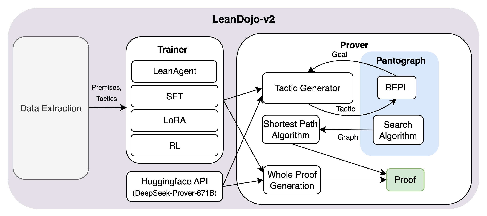
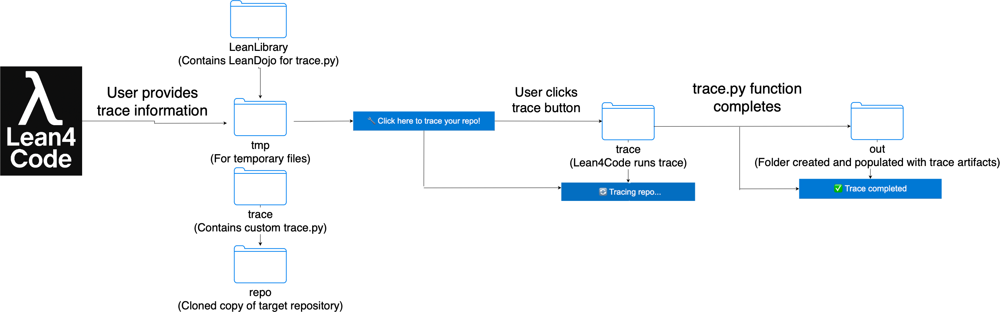
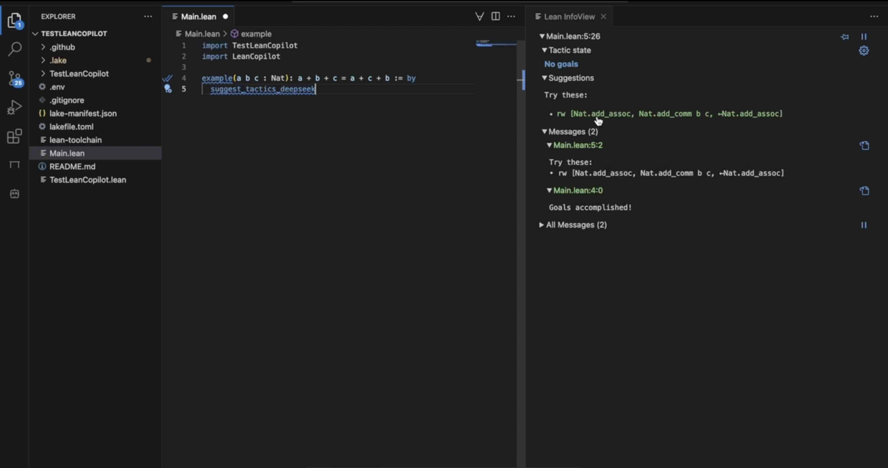

LeanDojo-v2: A Comprehensive Library for AI-Assisted Theorem Proving in Lean
Existing tools that combine machine learning with Lean (LeanDojo, ReProver, LeanCopilot, LeanAgent, REPLs) are separate research projects. They can be outdated and hard to maintain, and they require nontrivial setup, which makes AI-assisted theorem proving hard for mathematicians to adopt.
LeanDojo-v2 is an end-to-end library with a three-stage pipeline: data collection, training, and proving. Data collection traces user-specified Lean repositories to extract ASTs, dependencies, theorems, proofs, and premises. Training uses either LeanAgent-style progressive (curriculum) training of ReProver's retriever, ordered by proof-length difficulty, or HuggingFace fine-tuning on state-tactic pairs, with supervised, parameter-efficient, and reinforcement-learning options. Lean4Code is a VSCodium-based editor that bundles the Lean4 extension with LeanDojo tracing, LeanCopilot tactic suggestions, and Agent-TARS assistance.


The framework lets users fine-tune models on domain-specific Lean codebases and run LLM-assisted proving with a few lines of code or through a GUI. No quantitative proving benchmarks are reported in the provided text.

| Extension | Purpose |
|---|---|
| Lean4 (modified) | Downloads and configures Lean4/LeanDojo-v2 |
| LeanDojo | Supports one-click LeanDojo tracing |
| LeanCopilot | Calls models to complete theorems |
| Agent-TARS | General agentic AI assistance |